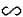
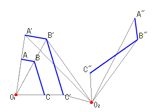

A'B'C' is the magnified figure of ABC.
We obtained A''B''C'' by rotating A'B'C' arround O2.
ABC and A''B''C'' are different in size, but they are the same shape.
We can say
"A''B''C'' is similar to ABC",
or A''B''C'' ABC.

Applet
How to use the applet
Drag the small knob to magnify and reduce A'B'C'.
Drag the red point on the small circle to rotate A''B''C'' .